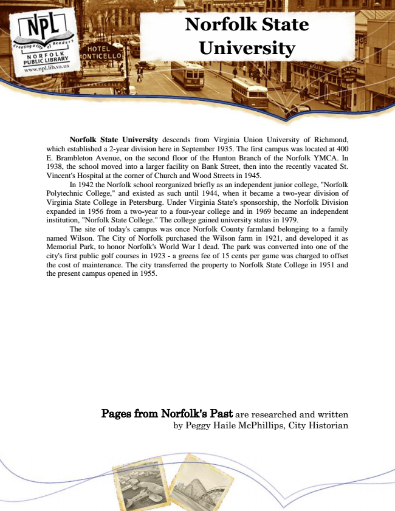

Norfolk State University
Norfolk State University descends from Virginia Union University of Richmond, which established a 2-year division here in September 1935. The first campus was located at 400 E. Brambleton Avenue, on the second floor of the Hunton Branch of the Norfolk YMCA. In 1938, the school moved into a larger facility on Bank Street, then into the recently vacated St. Vincent's Hospital at the corner of Church and Wood Streets in 1945.
In 1942 the Norfolk school reorganized briefly as an independent junior college, "Norfolk Polytechnic College," and existed as such until 1944, when it became a two-year division of Virginia State College in Petersburg. Under Virginia State's sponsorship, the Norfolk Division expanded in 1956 from a two-year to a four-year college and in 1969 became an independent institution, "Norfolk State College." The college gained university status in 1979.
The site of today's campus was once Norfolk County farmland belonging to a family named Wilson. The City of Norfolk purchased the Wilson farm in 1921, and developed it as Memorial Park, to honor Norfolk's World War I dead. The park was converted into one of the city's first public golf courses in 1923 - a greens fee of 15 cents per game was charged to offset the cost of maintenance. The city transferred the property to Norfolk State College in 1951 and the present campus opened in 1955.
Pages from Norfolk's Past are researched and written by Peggy Haile McPhillips, City Historian